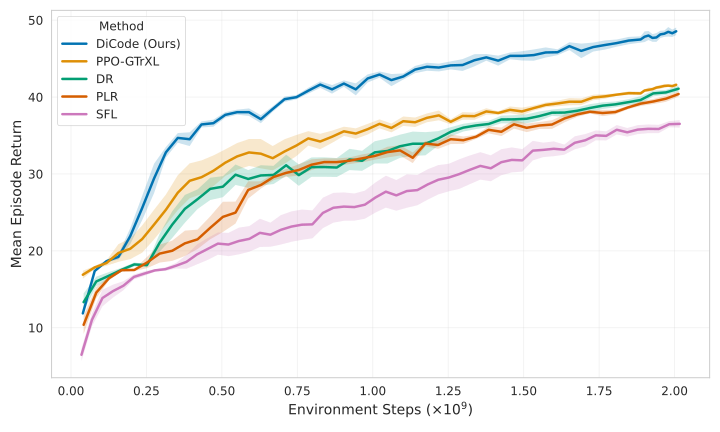
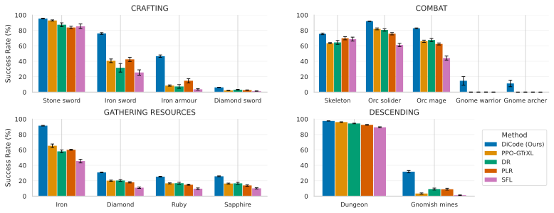
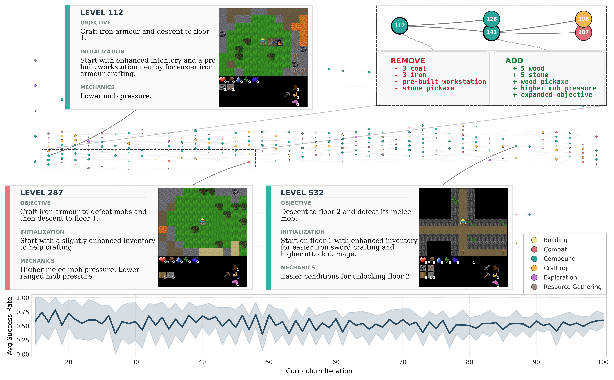

Dreaming in Code for Curriculum Learning in Open-Ended Worlds
Imperial College London
Accepted at ICML 2026Abstract
Open-ended learning frames intelligence as emerging from continual interaction with an ever-expanding space of environments. While recent advances have utilized foundation models to programmatically generate diverse environments, these approaches often focus on discovering isolated behaviors rather than orchestrating sustained progression. In complex open-ended worlds, the large combinatorial space of possible challenges makes it difficult for agents to discover sequences of experiences that remain consistently learnable. To address this, we propose Dreaming in Code (DiCode), a framework in which foundation models synthesize executable environment code to scaffold learning toward increasing competence. In DiCode, "dreaming" takes the form of materializing code-level variations of the world. We instantiate DiCode in Craftax, a challenging open-ended benchmark characterized by rich mechanics and long-horizon progression. Empirically, DiCode enables agents to acquire long-horizon skills, achieving a 17% improvement in mean return over the strongest baseline and non-zero success on late-game combat tasks where prior methods fail. Our results suggest that code-level environment design provides a practical mechanism for curriculum control, enabling the construction of intermediate environments that bridge competence gaps in open-ended worlds.
Dreaming in Code Loop

Curating the Lineage
DiCode maintains a structured archive of all generated levels. To ensure the agent develops a broad repertoire of skills, the selection mechanism explicitly promotes lineage diversity, prioritizing unexplored branches over already-mastered paths.
Using a learnability score, the selector identifies "parent" levels that are currently in the agent's Zone of Proximal Development. This ensures the curriculum always branches off from the frontier of the agent's current capabilities.
Generation Cycle
To scaffold progress toward the target environment, DiCode employs a process we term "dreaming": utilizing a foundation model to conceptualize and imagine the next optimal training scenario, tailored to the agent's current skill frontier, and materializing it into executable level.
Unlike standard UED methods that only randomly rearrange map tiles, DiCode programmatically specifies the whole environment logic. It algorithmically specifies the world topology, redefines interaction rules and progression logic, and defines specific objectives for each level.
Training
Training occurs on a stratified batch. Every update mixes experience from three sources:
- 20% Target Environment: To ensure grounded progress on the real task.
- Newly Generated Levels: To introduce the next logical challenges.
- Archived Levels: Replayed via PLR to prevent forgetting.
Before training, every generated level undergoes a compilation check to filter out invalid code.
Key Results: Unlocking the Impossible

DiCode establishes a statistically significant lead over the best-performing baseline early in training and maintains this dominance throughout, achieving a final mean return of 48.55 vs. 41.59 for the strongest baseline — a relative improvement of ~17%.

Instrumental Competence (The Setup)
Baselines struggle to prepare for danger. DiCode teaches the agent to "gear up" first, achieving 47% success on Iron Armour (vs. 15% for the strongest baseline). This defensive preparation is a crucial prerequisite for survival.
Deep Exploration (The Journey)
Because agents are better equipped, they survive the transition to harder floors significantly more often. DiCode agents reach the Gnomish Mines (Floor 2) in 32% of episodes, compared to just 9% for the strongest baseline.
Solving the Intractable (The Result)
Most critically, "dreaming" specific combat scenarios unlocks tasks that remain effectively impossible for standard RL and UED methods. While baseline performance collapses to 0% on the Gnome Warrior and Gnome Archer, DiCode achieves 15% and 11% success respectively, demonstrating the acquisition of complex, long-horizon combat skills.
Visualizing the Curriculum

Global Evolution
Early levels (e.g., Level 112) act as "training wheels," providing pre-built workstations and free resources to bypass tedious prerequisites. As the agent improves, the model removes this help, introducing higher mob pressure (Level 287) and eventually forcing the agent to descend into the Gnomish mines (Level 532) – a deep exploration bottleneck rarely reached by standard agents.
Local Mutation
The inset (112 → 143) illustrates a specific pedagogical behavior: Scaffolding Removal. Upon detecting high competence, the FM edits the Python code to strip away the free resources while expanding the objective. This forces the agent to learn how to gather and craft on its own.
The Goldilocks Zone
This adaptive pressure keeps the agent in the "Zone of Proximal Development." Throughout the entire run, the average success rate on the training batch remains stable at ~0.5, ensuring the challenge is always perfectly matched to the agent's current capabilities – neither too boring nor too frustrating.
What Drives DiCode?
We ablate DiCode along four design axes to identify what makes it work. Each variant isolates a single component while keeping everything else fixed.
| Method | Mean Return |
|---|---|
| DiCode (Ours) | 48.55 ± 0.49 |
| Random Parent Sampling | 46.44 ± 0.41 |
| Qwen80B | 45.88 ± 0.40 |
| Qwen30B | 44.38 ± 0.66 |
| Goal Only | 42.82 ± 0.39 |
| Open-Loop (DiCode-OL) | 41.12 ± 0.77 |
Random Parent Sampling — Picking parents at random still helps early on, but late-game combat success collapses to near-zero. The model must build on the right stepping stone.
Goal Only — Restricting the model to selecting goals without reshaping environments drops performance to baseline levels. The ability to scaffold initial states and mechanics is the primary driver.
FM Capability (235B → 80B → 30B) — Curriculum quality scales directly with model reasoning capability. Stronger models generate better stepping stones.
Open-Loop — Removing the agent's performance feedback entirely eliminates all gains. DiCode requires closed-loop grounding to steer generation toward the evolving learnability frontier.
Interactive Curriculum Archives
We provide complete, interactive HTML archives for 5 independent training runs. These allow you to inspect the full evolutionary history of the curriculum, including the exact level description, foundation model reasoning, Python code, and agent performance for every single generated level.
Select a run below to launch the interactive archive:
Citation
@misc{mitsides2026dreamingcodecurriculumlearning,
title={Dreaming in Code for Curriculum Learning in Open-Ended Worlds},
author={Konstantinos Mitsides and Maxence Faldor and Antoine Cully},
year={2026},
eprint={2602.08194},
archivePrefix={arXiv},
primaryClass={cs.LG},
url={https://arxiv.org/abs/2602.08194}
}